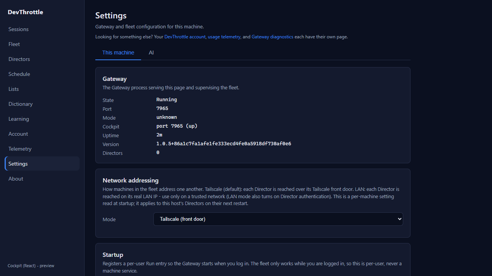
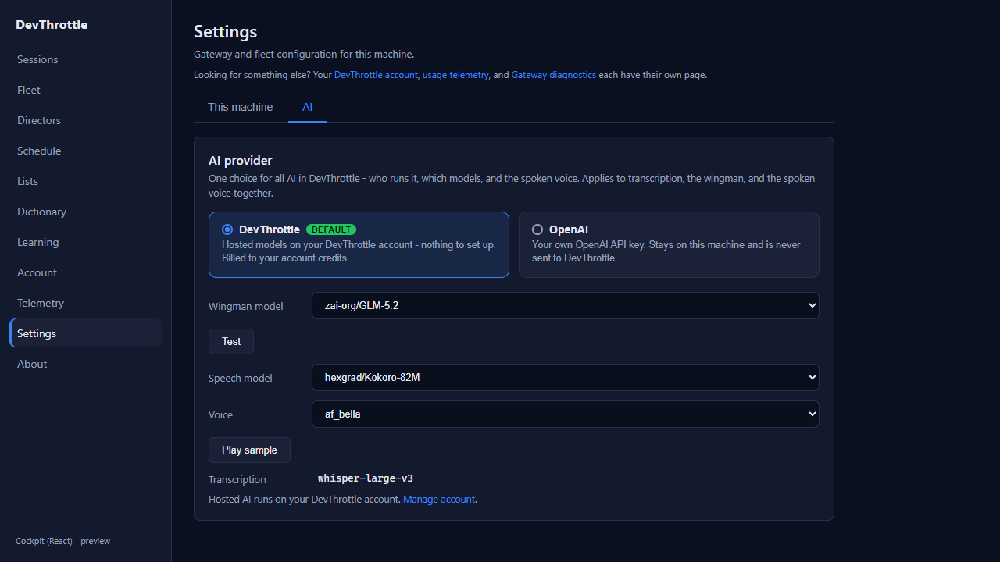
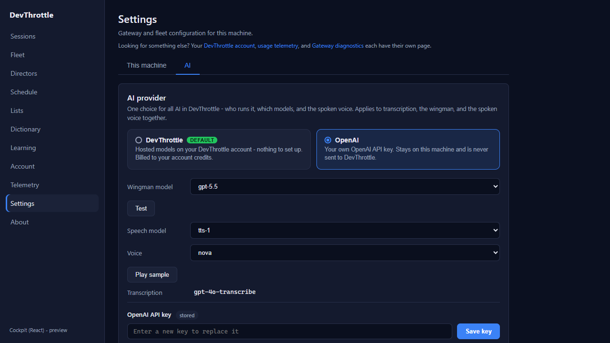

Build a real Cockpit Settings page (the nav link was dead). PR #1039, branch issue-1025-settings-page. Independently verified by the QA Agent on an isolated Gateway (port 7965, scratch data root, auth disabled) built from the PR branch in a dedicated worktree.
| Criterion | Expected | Actual | Result |
|---|---|---|---|
| Clicking "Settings" opens a working React page (no "Not found"). | A real Settings page renders. | The left-rail "Settings" item is a real NavLink to /settings; clicking it routed client-side and rendered the Settings page (heading "Settings", "This machine"/"AI" tabs, Gateway diagnostics, Network addressing, Startup, Training data). Not the "Not found" placeholder. 0 console errors. |
PASS |
| Reads current settings; a change persists through the Gateway and round-trips on reload. | A toggled setting stays after a full reload. | "Capture wingman training data" was false. Checking it issued PUT /gateway/wingman/training-capture; server GET then returned {"enabled":true}. After a full page reload the checkbox re-rendered [checked] (uptime advanced 1m to 2m, confirming a real reload). |
PASS |
| No secret (token/key) is present in the shipped browser bundle. | No key/token value in the built JS. | Grep of the built dist/assets/index-*.js: no sk- values, no hardcoded bearer/token literals; only the key NAME OPENAI_API_KEY appears (a reference, not a value). Live: the OpenAI key input is type=password, autocomplete=off, write-only; the panel shows only a set/not-set pill, never the value. |
PASS |
| Gateway-only-ingress rule (root-relative URLs; ingress lint passes). | Ingress eslint rule clean. | npm run lint (eslint over the whole repo, including the custom Gateway-only-ingress rule from #967/#968) passed with no output. All settings requests are root-relative (/gateway/*, /vault/keys), never a Director address. |
PASS |
| Matches the Cockpit visual style. | Same shell/typography as other pages. | Renders inside the standard Cockpit shell (left rail + brand, dark theme, page-head/card styling) identical to the other routed pages. See screenshots. | PASS |
| Full build gate clean. | All four builds succeed. | cockpit npm run build: built OK. npm run lint: clean. Gateway dotnet build -p:RunCockpitBuild=true: Build succeeded, 0 Error(s). dotnet build cc-director.sln: Build succeeded, 0 Error(s). |
PASS |
Only benign React Router v7 future-flag warnings and two 503 on /gateway/ai/models - the provider model catalog is unreachable on an isolated Gateway with no AI account; getAiModels deliberately degrades to an empty list so the AI tab still renders the saved provider/model. Environmental, not a #1025 defect. No functional errors.


